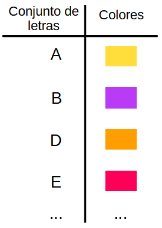

Matemágicas: ¿Te atreves a crear códigos secretos?
4.2 Nos relacionamos y funcionamos
Diccionario
Designa
Definición:
Denominar, indicar.
Ejemplo:
María designa a los delegados y delegadas de clase.
Diagrama
Definición:
Gráfico en el que aparece información
Ejemplo:
La profesora no validó la pregunta porque el diagrama estaba mal representado.
Elaborar
Definición:
Preparación de un producto o material.
Ejemplo:
Laura elaboró un mapa conceptual sobre los métodos de codificación más conocidos.
Frecuencia cardíaca
Definición:
Número de contracciones del corazón o pulsaciones por unidad de tiempo.
Ejemplo:
Cuando llegó al médico su frecuencia cardíaca era muy elevada.
Limitar
Definición:
Acortar o reducir algo.
Ejemplo:
El experto nos recomendó limitar el uso de los teléfonos móviles.
En el apartado anterior has comprobado cómo las coordenadas en el plano te han servido para ocultar o localizar mensajes.
Ahora vamos a ver cuál es la idea matemática principal que va dentro de cualquier mensaje secreto, para que puedas crear después tus propios códigos y máquinas para elaborar tus mensajes secretos.
Definición:
Preparación de un producto o material.
Ejemplo:
Laura elaboró un mapa conceptual sobre los métodos de codificación más conocidos.
1. Para crear códigos hay que relacionar y funcionar
Relación
¿Recuerdas cómo escribías los mensajes secretos utilizando la escritura jeroglífica?
Si te das cuenta, todo consiste en relacionar cada letra de nuestro abecedario con un símbolo egipcio.
En Matemáticas, una relación es una correspondencia entre los elementos de dos conjuntos, de manera que a cada elemento del conjunto inicial le corresponde, al menos, uno del conjunto final.
Representando
Podrás representar las relaciones de varias formas, mediante:
Un diagrama con flechas. Se representan los dos conjuntos, y se unen con flechas los elementos relacionados
Una tabla de valores. En una tabla de dos columnas, se ponen uno junto al otro los elementos relacionados.
Pares ordenados de números. Se hacen parejas con los elementos relacionados. Es habitual que se pongan entre paréntesis y separados por comas.
En tu ejemplo del código jeroglífico:
Flechas
Tabla de valores
Pares ordenados
Necesitamos más
Pero cualquier relación no te servirá para diseñar un código.
Imagínate que algunas letras estuviesen relacionadas con varios símbolos jeroglíficos,
sería muy difícil que mandases y descifrases mensajes. Por ello, para diseñar un código no es suficiente con establecer una relación.
Función
Para crear un código, tendrás que relacionar cada elemento del primer conjunto con uno, y no más de uno, del segundo.
Necesitas una función.
Una función es una relación donde, a cada elemento del conjunto inicial, le corresponde un elemento del conjunto final.
En la siguiente ejemplo, inventamos un código en el que asignamos un único color a cada letra
En esta tabla aparece cada letra con su color asignado.
Es un ejemplo de función

Puedes imaginarte así una función
El código de colores es una función, porque cada letra o símbolo tiene relacionado un color.
No es suficiente
Pero con una función no es suficiente. Mira este ejemplo de código de colores:
En este caso tienes una relación que también es función.
Todas las letras están relacionadas con colores.
Es decir, todos los elementos del primer conjunto están relacionados con algún elemento del segundo.
Pero cuando quieras descifrar el mensaje no vas a saber si el amarillo se corresponde con la letra A, o con la letra I.
Función uno a uno
Entonces, para crear un código, necesitarás que cada elemento del primer conjunto se relacione con uno del segundo, pero sin repetir ninguno de ellos. Necesitarás una función uno a uno.
Una función uno a uno, o inyectiva, es aquella en la que cada elemento del primer conjunto, está relacionado con uno distinto del segundo.
Aquí tienes dos ejemplos de función, usando códigos de colores;
Es posible, que en el segundo conjunto tengamos elementos que no estén relacionados con los del primero.
En ese caso, al crear el código, los elementos del segundo conjunto que no estén relacionados, no significarán nada.
Así que con ayuda de las funciones uno a uno, ya puedes diseñar tu propio código.
Definición:
Gráfico en el que aparece información
Ejemplo:
La profesora no validó la pregunta porque el diagrama estaba mal representado.
Dominio y recorrido
En una relación o en una función:
el primer conjunto se le llama dominio
el segundo se llama recorrido o rango.
En el jeroglífico has relacionado dos conjuntos de símbolos:
las letras de nuestro abecedario
los símbolos jeroglíficos.
En este caso:
las letras del abecedario son el dominio de la relación
los símbolos jeroglíficos que has usado son el recorrido o rango de la relación.
Lumen dice: ¿Relación es lo mismo que función?
Todas las relaciones son funciones, pero no todas las funciones son relaciones.
Veámoslo más claramente con estos ejemplos, relacionando las letras con los colores:
Relación (que no es función)
En este caso, a la letra A del primer conjunto le corresponden dos colores del segundo, por lo que aunque es relación no es función.
Relación (que sí es función)
En este caso, a todas las letras del primer conjunto le corresponden un color del segundo, por lo que es relación y función.
Supongamos que tenemos una relación en la que a varios elementos, o a todos, del conjunto inicial le corresponden el mismo valor del conjunto final, como en la figura. ¿Se trata de una función o no?
En ese caso, sí se trataría de una función porque cada letra está relacionada con un color, aunque sea el mismo.
Las funciones en las que todos los elementos del primer conjunto están relacionados con el mismo del segundo se llaman funciones constantes.
2. Representar funciones para crear códigos
¿Cómo definir una función?
Definir una función, puede ser muy complicado. A veces, es posible que los conjuntos sean infinitos, por lo que la función está formada de infinitas relaciones. Además, los conjuntos pueden ser de cualquier cosa.
Vamos a ver distintas formas de definir una función, con un ejemplo de función. Dependiendo de qué función sea, podrán utilizarse o no estas formas.
En Matemáticas estudiamos mucho las funciones en las que los dos conjuntos están formados por números. Son las conocidas funciones numéricas. Para este caso siempre se pueden usar estas formas de definir la función.
Vamos a ver dichas maneras de definir una función usando el ejemplo de la relación que asocia a cada número, el número siguiente.
Enunciado
Mediante un enunciado, podemos definir una función:
Tabla de valores
Mediante una tabla de valores (tabularmente), colocamos en la primera columna los valores del primer conjunto y en la segunda, junto a cada uno de ellos el que está relacionado con él.
En nuestro ejemplo, La primera columna de la tabla está formada por los números naturales positivos: 1, 2, 3, 4... y la segunda columna por sus siguientes: 2, 3, 4, 5,...
A la letra "x" que va variando en el conjunto de los números naturales positivos (dominio), se le designa variable independiente y a la letra "y" que toma los valores en los números naturales positivos a partir de 2 (recorrido) se le llama variable dependiente, ya que su valor depende del valor asignado a la "x".
Gráfica
Mediante su representación gráfica (gráficamente). Ponemos en los ejes los valores del primer conjunto(horizontal) y del segundo(vertical), y utilizamos las coordenadas cartesianas para representarlos.
En nuestro ejemplo:
Los números del Eje horizontal (eje de abscisas), de color marrón representan los elementos del primer conjunto.
Los números del Eje vertical (eje de ordenadas), de color azul, representan las elementos del segundo conjunto con los que están relacionados.
Se representan con puntos(cuadrados en este caso) sobre la cuadrícula los pares formados por un elemento y su relacionado, y juntos representan a la gráfica de la función.
Fórmula analítica
Mediante una expresión o fórmula (analíticamente).
Para utilizar esta forma de definir una función, cada elemento del primer conjunto debe estar relacionado con uno del segundo, mediante una fórmula.
Utilizaremos una incógnita, generalmente "x" para el valor del primer conjunto.
Utilizaremos f(x), generalmente, para representar el elemento del segundo conjunto con el que está relacionado x. Aunque también se utiliza la incógnita "y"
La expresión de la función de nuestro ejemplo será:
f(x) = x +1
f(x)=x+1 o y=x+1
Al 1 le correspondería f(1)=1+1= 2
Al 2 le correspondería f(2)=2+1=3
...
y así sucesivamente.
Definición:
Denominar, indicar.
Ejemplo:
María designa a los delegados y delegadas de clase.
Lectura facilitada
Para definir una función podemos usar:
1. Un enunciado.
2. Una tabla de valores.
Colocando en la primera columna los valores del primer conjunto y en la segunda los que están relacionados con él.
3. Mediante una gráfica de coordenadas cartesianas.
4. Mediante expresión o fórmula analítica.
Utilizando la letra X para el valor del primer conjunto y la letra Y para la incógnita.
Lumen dice: ¿Son importantes las funciones?
Las funciones son de gran utilidad ya que ayudan a resolver muchos problemas de campos tan diversos como las Matemáticas, Economía, Ingeniería, Psicología,... y en general de cualquier área en la que tengamos que relacionar variables y podamos encontrar el valor de una variable en función de otra de la que depende.
Hay muchos tipos de funciones y nos las encontramos en muchas situaciones en la vida cotidiana. Las más conocidas son las funciones numéricas, por ejemplo la que relaciona el precio que tenemos que pagar en función del número de artículos que compremos, llamada función de proporcionalidad directa.
3. Hay que poner en práctica las relaciones y las funciones. ¿Necesitas ayuda?
Opción A: Para funcionar hay que aclarar las ideas
Opción B: Sigue los pasos adecuados para cifrar y descifrar mensajes
Debes ordenar los siguientes pasos a seguir para codificar y decodificar un mensaje:
Tengo un mensaje que quiero enviar a alguien y no quiero que conozcan más personas.
Debo elegir un código a utilizar para codificar el mensaje.
A continuación codifico el mensaje siguiendo la relación de los elementos existentes en el código.
Debo enviar el mensaje codificado al receptor para que lo descifre.
El receptor o persona que ha recibido el mensaje debe poseer el código para decodificar el mensaje.
Comprobar
¡Correcto!
202451305358-120
exe2024
Actividad no completada#Actividad superada. Puntuación: %s#Actividad no superada. Puntuación: %s#Lista desordenada
No es correcto... Respuesta correcta:
Motus dice: ¿Cuántas veces te has distraído al hacer esta actividad?
Seguro que cuando estabas haciendo esta actividad ha ocurrido algo que te ha hecho parar.
Puede que alguien pegase a la puerta, que el profe haya hablado con alguien, que hayas oído un ruido en la calle, que te hayas acordado de algo que hiciste ayer.
Cuando aprendemos estamos rodeados de cosas que nos pueden distraer. Al volver a la actividad te cuesta más trabajo centrarte.
Por eso es importante que aprendas a controlar tus distracciones. Te doy algunos consejos:
Concéntrate bien en la actividad que tienes que realizar.
Si tiene muchos pasos o es muy difícil, haz descansos cortos para descansar.
Si te molesta lo que hay a tu alrededor trata de ver si puedes reducirlo: cierra las ventanas, pide silencio.
Piensa que si te distraes tardarás más tiempo en terminar.
Opción C: Elige las relaciones adecuadas para codificar mensajes
1
La siguiente imagen muestra seis relaciones entre conjuntos. Debes elegir las que son funciones, y escribirlas de forma ordenada en el código de acceso:
El código de acceso era ACEF pues en estas relaciones, a cada elemento del conjunto inicial le corresponde un único valor del conjunto final, y por lo tanto, son funciones.
Su navegador no es compatible con esta herramienta.
Opción D: A por la función desconocida
La solución es f(x)= x+6 ya que el cifrado A→G indica que asocia la letra G a la letra A y eso supone moverse en la rueda 6 posiciones hacia adelante.
Motus dice: ¿Qué tal te ha ido?
Si has llegado hasta aquí seguro que has comprendido las relaciones y funciones que tienen lugar entre los elementos de dos conjuntos.
Seguro que en el próximo apartado aprendes mucho más y vas camino de conseguir los objetivos que nos propusimos al comienzo.
Así que ¡ánimo y adelante!
4. ¿Sabías que..?
Latidos del corazón (Texto obtenido de las pruebas liberadas Pruebas PISA 2013)
Por razones de salud la gente debería limitar sus esfuerzos, al hacer deporte, por ejemplo, para no superar una determinada frecuencia cardíaca. Durante años la relación entre la máxima frecuencia cardíaca recomendada para una persona y su edad se describía mediante la fórmula siguiente:
Número de contracciones del corazón o pulsaciones por unidad de tiempo.
Ejemplo:
Cuando llegó al médico su frecuencia cardíaca era muy elevada.
Definición:
Acortar o reducir algo.
Ejemplo:
El experto nos recomendó limitar el uso de los teléfonos móviles.
Un artículo de periódico afirma:
“El resultado de usar la nueva fórmula en vez de la antigua es que el máximo número recomendado de latidos cardíacos por minuto disminuye ligeramente para los jóvenes y aumenta ligeramente para los mayores.”
¿A partir de qué edad aumenta la máxima frecuencia cardiaca recomendada como resultado de introducir la nueva fórmula?
Por lo que las personas por encima de 40 años tendrán un máximo ritmo cardiaco recomendado más alto con la nueva fórmula.
La fórmula para la máxima frecuencia cardiaca recomendada = 208 – (0,7 · edad) se usa también para determinar cuándo es más útil el ejercicio físico.
Las investigaciones han demostrado que el ejercicio físico es más útil cuando los latidos cardíacos alcanzan el 80% de la máxima frecuencia cardiaca recomendada.
Escribe una fórmula que calcule la frecuencia cardíaca recomendada para que el ejercicio físico sea más efectivo, expresada en términos de edad.
Solución
Para calcular el 80% solo tenemos que multiplicar la fórmula por 0,8


{kind=link}
{kind=link}